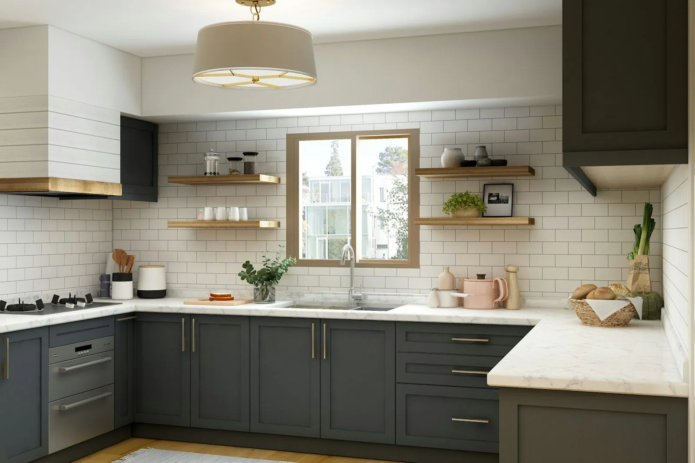

Before
After
VC
VC Home Solutions
Homes rebuilt by hand, across the Valley.
Remodels, flooring, upgrades and water-damage repair in the Phoenix area.
FREE ESTIMATES
(480) 555-0142
 BeforeAfter
BeforeAfter
BeforeAfter
BeforeAfter